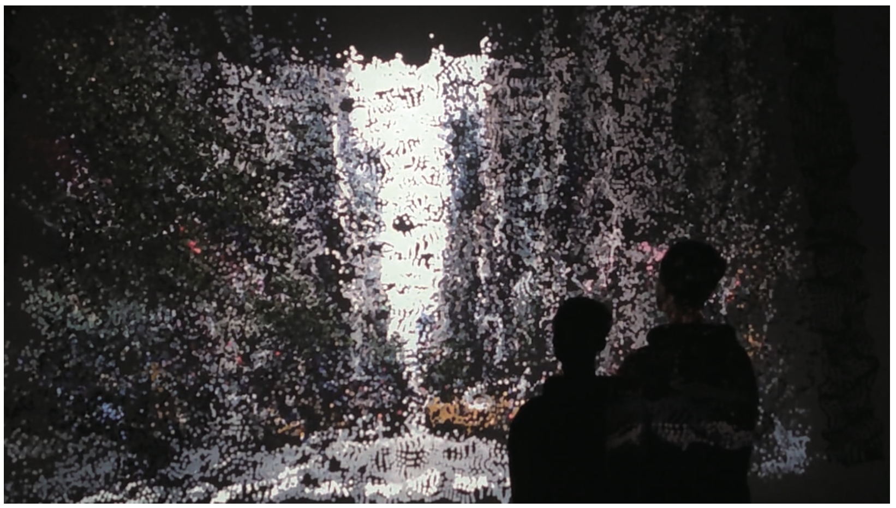
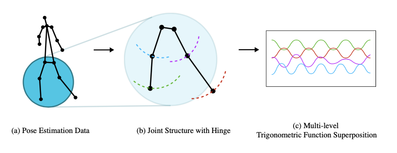
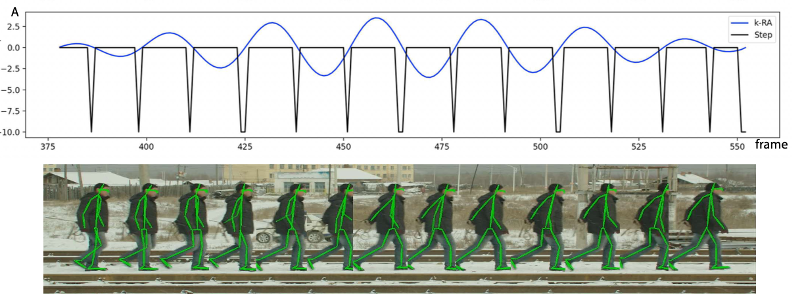
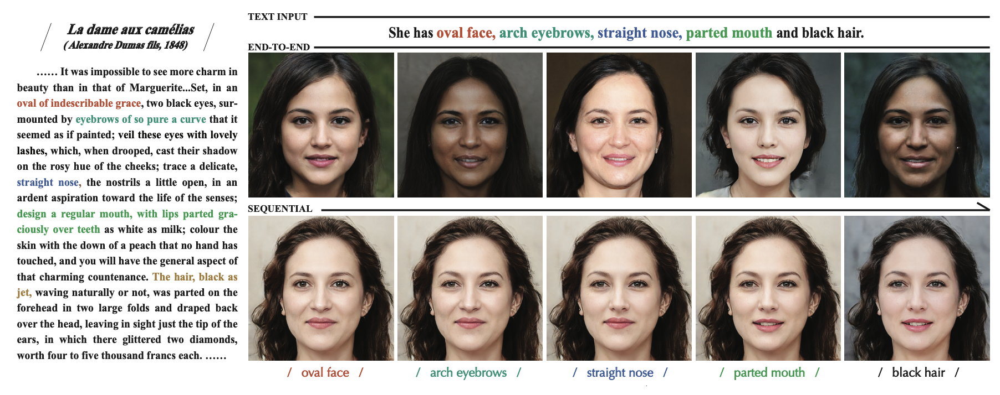
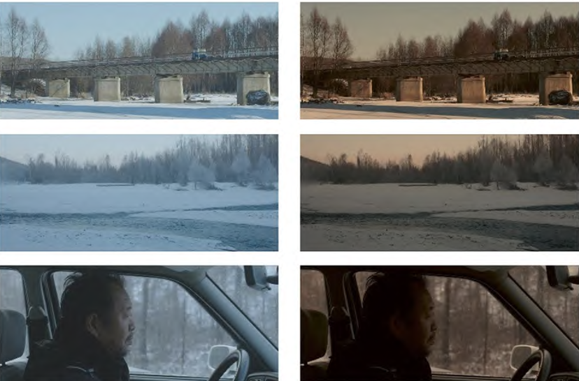
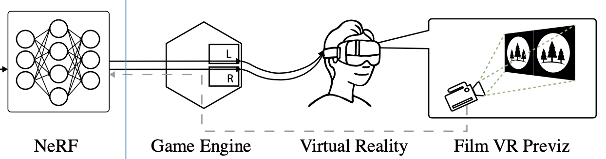
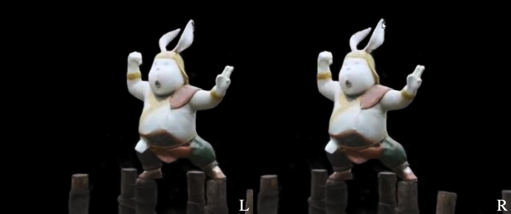
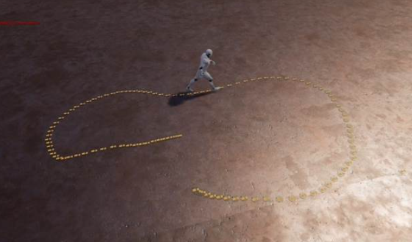
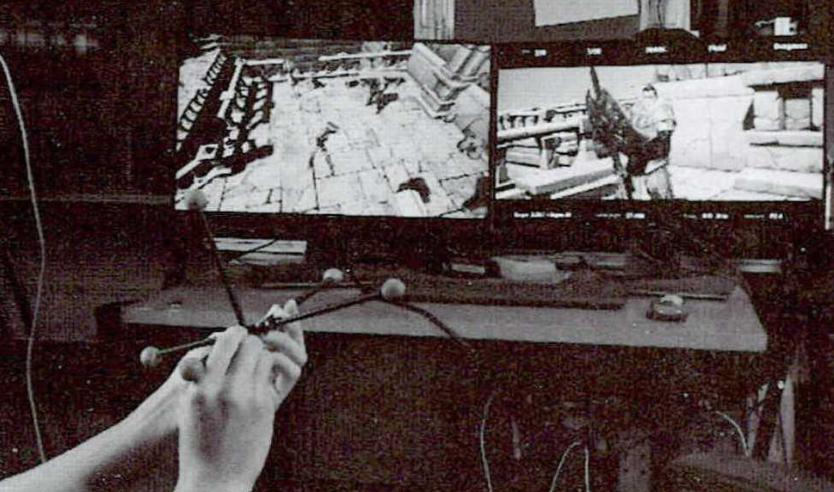

MORE PUBLICATIONS COMMING SOON …
(∗: Equal contributions. †: Corresponding author.)
|  |
EDAVS: Emotion-Driven Audiovisual Synthesis Experience
Sihang Chen*, Junliang Chen*, Xiaojuan Gu†. SIGGRAPH 2024, Poster [SIG 24] [Paper] |
|   |
Footstep Detection for Film Sound Production
Xiaojuan Gu*†, Junliang Chen*, Bo Li, Jun Chen. SIGGRAPH ASIA 2023, Technical Communications [SIG ASIA 23] [Paper] |
|  |
Text2Face: Text-based Face Generation with Geometry and Appearance Control
Zhaoyang Zhang, Junliang Chen, Hongbo Fu, Jianjun Zhao, Shu-Yu Chen, Lin Gao. CVM 2023, IEEE TVCG 2024 [Paper] |
|  |
Auxiliary method of digital color grading based on color transfer
Junliang Chen, Xiaojuan Gu, Advanced Motion Picture Technology, 2023(05):35-40. |
|   |
NeRF-based Virtual Reality Film Previz
Junliang Chen, Xiaojuan Gu, 2022 |
|  |
Human-computer Interaction Method in Previz Based on Leap Motion
Jianjun Zhao, Junpeng Huang, Junliang Chen, CIDE & DEA 2020 (CAD Intelligence and Digital Entertainment and the conference of Digital Entertainment and Art 2020) Journal of Graphics, 2021, Vol. 42, No. 1, pp. 71-78 |
|  |
Interactive Control Method and Implementation of Virtual Characters in Virtual Movie Making
Jianjun Zhao, Junliang Chen, Junpeng Huang, Advanced Motion Picture Technology, No.12, 2019 |